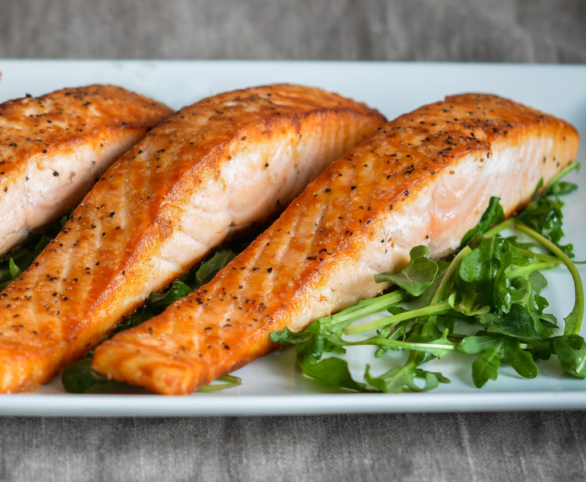

Crispy Salmon

Description:
This recipe is so tasty and easy,
you'll be craving salmon every night of the week.
All you need is some seasoning, a hot oven and less than 20 minutes.
Ingredients:
- Salmon fillet
- Salt
- Pepper
- Paprika
- Garlic Powder
- Onion Powder
Steps:
- Preheat oven to 400 degrees F.
- Line the bottom of a baking dish with foil.
- While oven is preheating add your seasoning to both sides of salmon fillet and place on foil.
- Bake salmon in oven for 10 to 12 min.
- After your timer goes off, without taking salmon out of oven turn your oven to broil.
Let the salmon broil for 3 to 4 minutes. VERY IMPORTANT: Don't leave the salmon unattended
at this point because it can burn very easily. You may have to take salmon out of oven before
timer goes off.